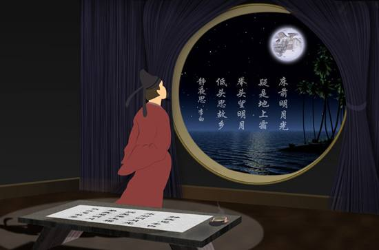

|
|  | 静夜思 床前明月光， 疑是地上霜。 举头望明月， 低头思故乡。 |
词句注释 ⑴静夜思：安静的夜晚产生的思绪。 ⑵床：此诗中的“床”字，是争论和异议的焦点。今传五种说法。①指井台。②指井栏。从考古发现来看，中国最早的水井是木结构水井。古代井栏有数米高，成方框形围住井口，防止人跌入井内，这方框形既像四堵墙，又像古代的床。因此古代井栏又叫银床，说明井和床有关系，其关系的发生则是由于两者在形状上的相似和功能上的类同。③“窗”的通假字。从意义上讲，“床”可能与‘窗’通假，而且在窗户前面是可能看到月亮的。但是，参照宋代版本，‘举头望山月’，便可证实作者所言乃是室外的月亮。从时间上讲，宋代版本比明代版本在对作者原意的忠诚度上，更加可靠。④取本义，即坐卧的器具，《诗经·小雅·斯干》有“载寐之牀”，《易·剥牀·王犊注》亦有“在下而安者也”之说，讲得即是卧具。⑤马未都等认为，床应解释为胡床。胡床，亦称“交床”、“交椅”、“绳床”。古时一种可以折叠的轻便坐具，马扎功能类似小板凳，但人所坐的面非木板，而是可卷折的布或类似物，两边腿可合起来。现代人常为古代文献中或诗词中的“胡床”或“床”所误。至迟在唐时，“床”仍然是“胡床”（即马扎，一种坐具）。 ⑶疑：好像。 ⑷举头：抬头。 |
|
白话译文 明亮的月光洒在窗户纸上， 好像地上泛起了一层霜。 我禁不住抬起头来，看那天窗外空中的一轮明月， 不由得低头沉思，想起远方的家乡。 |
|

唐诗学习网 Copyright© 2018 All Right Reversed
|